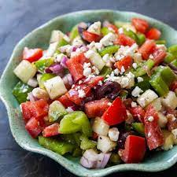

Greek Salad

Description
As the name suggests, this is a classic Greek dish, perfect for a light meal or as an accompaniment to a main meal. Not only is this salad delicious and easy to make, it is also makes for a light and healthy standalone option with its balance of veggies and natural fats from the feta, kalamata olives and olive oil.
Ingredients
- Feta
- Cherry Tomatoes
- Cucumber
- Kalamata Olives
- Red Onion
- Green Peppers
- Oregano (fresh or dried)
- Sea Salt
- Extra Virgin Olive Oil
Steps
- Wash your cucumber, cherry tomatoes and green pepper.
- Chop your tomatoes in half and add to a medium sized bowl.
- Cut your cucumber legnthwise, then slice into semi-circles. Add to the bowl.
- Cut your green pepper into strips and add to the bowl.
- Peel and chop your red onion in half. Make 2-3 slices of onion, break them apart and add them to the bowl.
- Add salt and some of the oregano and mix together.
- Add the kalamata olives and crumble in the feta. Depending on how you like it, crumble the feta into small or large peice (I usually opt for large).
- Add a generous amount of extra virgin olive oil and the remaining oregano over the top.
- Give it a final careful mix and enjoy!